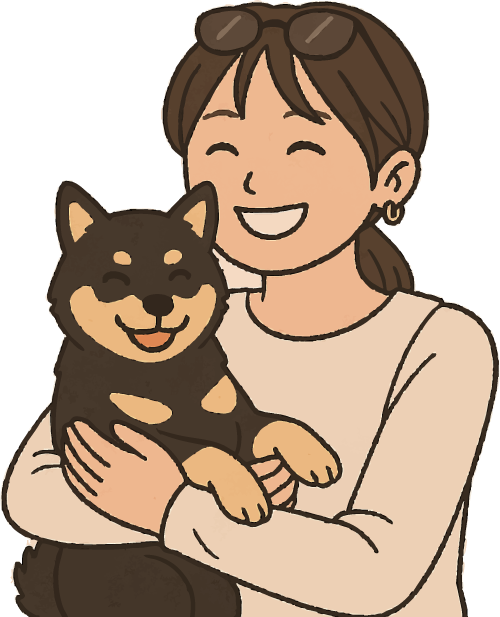

アパレル業界で培った15年以上の接客・販売経験と、飲食業界での店舗運営・スタッフ管理の経験を経て、現在はWebデザインの道へ進みました。
お客様一人ひとりのニーズを汲み取り、最適な提案を行うことで「誰かの役に立つ実感」に大きなやりがいを感じてきました。
この経験と情熱を、今後はWebデザインを通じて「遊び心」と「使いやすさ」を両立させた形でお客様に届けたいと考えています。

プロフィール
- 名前： 武貞 麻美 (タケサダ アサミ)
- 生年月日： ○○年 6月 21日
- 使用ソフト：Adobe Photoshop、Illustrator、
Visual Studio Code
デザイン・制作ツール
- Adobe Photoshop: 職業訓練で習得（バナー・LPデザイン、画像加工、写真レタッチ）
- Adobe Illustrator: 職業訓練で習得（ロゴ・アイコン作成、ベクターイラスト制作）
コーディング・Web制作
- HTML / CSS: 職業訓練で習得（セマンティックHTML、CSS設計、レスポンシブデザイン対応）
- Visual Studio Code: コードエディタとしての使用経験
- JavaScript: 基礎学習中（Webサイトに動きをつけるための学習）
Webデザインに活かせる経験
- 顧客対応力・提案力: 15年以上の接客経験で培った、お客様のニーズを正確に把握し、最適な解決策を提案する力
- 販促・発信力: 飲食店でのPOP作成やSNS投稿を通じ、視覚的に情報を整理し、魅力を伝える実践経験
- 状況判断力・問題解決能力: 店舗運営で培った、現場での突発的な問題への柔軟な対応力
- チームワーク・コミュニケーション: 新人育成やスタッフ管理を通じた円滑な連携能力
資格・パーソナル
- 普通自動車第一種免許（平成16年5月）
- 介護職員初任者研修修了（平成26年11月）
- 移動介護従事者課程修了(平成28年5月)
- ペット: 黒豆柴（熊之介）、文鳥（いちご大福・しらたま・みたらし）
- 趣味: カメラ、ドライブ、料理（特にクラフトビールに合う料理作り）